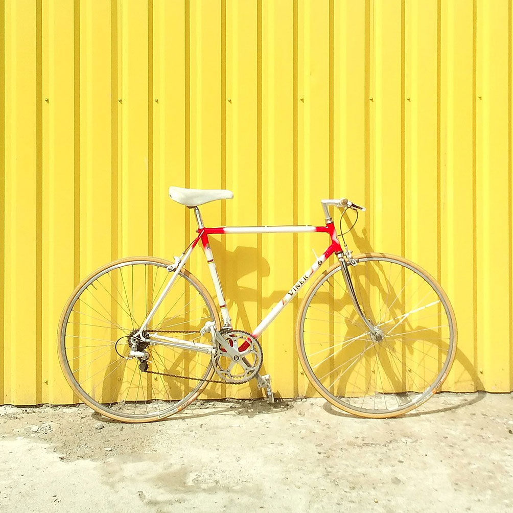

Cycling quickly became an activity after bicycles were introduced in the 19th century. Today, over 50 percent of the human population knows how to ride a bike.
Equipment
In many countries, the most commonly used vehicle for road transport is a utility bicycle. These have frames with relaxed geometry, protecting the rider from shocks of the road and easing steering at low speeds. Utility bicycles tend to be equipped with accessories such as mudguards, pannier racks and lights, which extends their usefulness on a daily basis. Since the bicycle is so effective as a means of transportation, various companies have developed methods of carrying anything from the weekly shop to children on bicycles. Certain countries rely heavily on bicycles and their culture has developed around the bicycle as a primary form of transport. In Europe, Denmark and the Netherlands have the most bicycles per capita and most often use bicycles for everyday transport.
Skills
Many schools and police departments run educational programs to instruct children in bicycle handling skills, especially to introduce them to the rules of the road as they apply to cyclists. In some countries these may be known as bicycle rodeos, or operated as schemes such as Bikeability in the UK. Education for adult cyclists is available from organizations such as the League of American Bicyclists.
Infrastructure
Cyclists, pedestrians and motorists make different demands on road design which may lead to conflicts. Some jurisdictions give priority to motorized traffic, for example setting up one-way street systems, free-right turns, high capacity roundabouts, and slip roads. Others share priority with cyclists so as to encourage more cycling by applying varying combinations of traffic calming measures to limit the impact of motorized transport, and by building bike lanes, bike paths and cycle tracks. The provision of cycling infrastructure varies widely between cities and countries, particularly since cycling for transportation almost entirely occurs in public streets. And, the development of computer vision and street view imagery has provided significant potential to assess infrastructure for cyclists.